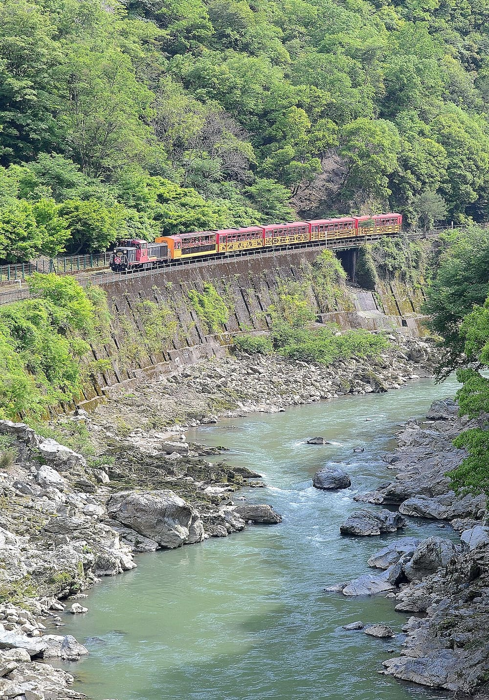
Photo: Toshinori baba · CC BY-SA 4.0 · Wikimedia Commons從龜岡搭小火車逆著保津川進入嵐山，沿小倉山麓走過五處寺社，最後在渡月橋收尾。觀光為主，御朱印順路收。
這份手冊只整理「已確認的行程」，方便出發前閱讀、當天在路上查閱。每個數字都標了來源等級，請先看下面的圖例。
| ✅ | 已用官方網站原文核實：開啟寺社、交通機構或觀光協會官網頁面確認，不是搜尋引擎摘要。 |
| 📷 | 御朱印社群平台（Omairi）的真實訪客投稿：我已用瀏覽器實際開啟頁面讀取，並標示投稿或參拜日期，優先採用 2026 年內的紀錄。 |
| ⚠️ | 二手資料或未經證實：轉乘網站、旅遊網站、Google Maps 估算、我自己的估算。僅供參考，出發前請再確認。 |
| 中文 | 日文（搜尋用） | 讀音 |
|---|---|---|
| 京都站／馬堀站 | 京都駅／馬堀駅 | きょうとえき／うまほりえき |
| 小火車 龜岡站／嵐山站 | トロッコ亀岡駅／トロッコ嵐山駅 | とろっこかめおか／とろっこあらしやま |
| 御髮神社 | 御髪神社 | みかみじんじゃ |
| 大河內山莊 | 大河内山荘庭園 | おおこうちさんそうていえん |
| 常寂光寺／二尊院 | 常寂光寺／二尊院 | じょうじゃっこうじ／にそんいん |
| 野宮神社／天龍寺 | 野宮神社／天龍寺 | ののみやじんじゃ／てんりゅうじ |
| 渡月橋／JR 嵯峨嵐山站 | 渡月橋／嵯峨嵐山駅 | とげつきょう／さがあらしやまえき |
時間為預估值。粗體時間是「固定不能改」的時刻（有訂位的小火車）；其餘為彈性時間。步行時間除註明外，皆為 Google Maps 或我的估算⚠️。
| 時間 | 地點 | 行程 | 交通 | 停留 |
|---|---|---|---|---|
| 08:16 | 京都站 | 搭 JR 嵯峨野線（普通車，往園部／龜岡方向） | JR 約 25 分，¥320 | — |
| 08:41 | 馬堀站 | 步行前往トロッコ亀岡站，確認電子票券 | 步行 7～9 分（550～650 m） | 約 10 分 |
| 09:30 | トロッコ亀岡 | 嵯峨野小火車「嵯峨野 2 號」→ 嵐山 | 小火車約 20 分，¥880（全席指定） | 約 23 分 |
| 09:53 | トロッコ嵐山 | 下車，往北側寺社區 | 步行約 3～5 分 | — |
| 10:00 | 御髮神社 | 參拜、御髮塚、御朱印 | 步行 | 20 分 |
| 10:25 | 大河內山莊 | 庭園散步、抹茶點心 | 步行約 3 分 | 40 分 |
| 11:15 | 常寂光寺 | 多寶塔、山腰展望、御朱印 | 步行約 10 分（爬坡） | 40 分 |
| 12:05 | 二尊院 | 總門、參道、本堂、御朱印 | 步行 5～8 分 | 40 分 |
| 12:45 | 竹林小徑 | 南下慢走、拍照 | 步行 | 20 分 |
| 13:05 | 野宮神社 | 黑木鳥居、縁結び、御朱印 | 步行 | 25 分 |
| 13:30 | 午餐 | 天龍寺周邊（湯豆腐等） | 步行 | 60 分 |
| 14:30 | 天龍寺 | 曹源池庭園、百花苑、御朱印 | 步行 | 75 分 |
| 15:45 | 渡月橋 | 橋上與河畔散步、拍照 | 步行 | 20 分 |
| 16:05 | 嵐山街區 | 小吃、伴手禮 | 步行 | 40 分 |
| 16:45 | JR 嵯峨嵐山站 | 步行前往車站 | 步行約 15 分 | — |
| 17:05 | → 京都站 | 搭 JR 回京都（約 17:22 抵達） | JR 約 17 分，¥240 | — |
| 時間 | 界線 | 意義 |
|---|---|---|
| 09:30 | 小火車發車 | 唯一不能錯過的班次；錯過就改 10:30，並刪二尊院與街區。 |
| 16:00 | 二尊院御朱印 | 授與時間官方未載明，一律在 16:00 前完成（本行程約 12:20 就領）。 |
| 16:30 | 多數寺院最後入場 | 大河內山莊、常寂光寺、二尊院都在 16:30 前截止（本行程 12:45 前都已離開）。 |
| 16:50 | 天龍寺庭園最後受付 | 本行程 14:30 進入，緩衝約 2 小時。 |
大型景點的停留時間已包含景區內移動、拍照與御朱印排隊。天龍寺建議只看庭園，不全部走完（見天龍寺頁）。
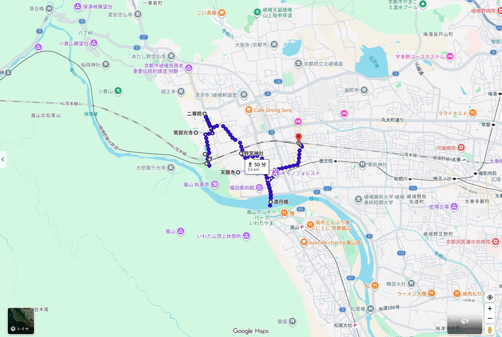
粉紅底＝有御朱印的寺社；綠底＝交通節點。
整段步行路線（Google Maps 開新分頁） 地圖上的路線是 Google 的最短步行路徑，實際可能因為參拜動線略有不同。
| # | 起點 → 終點 | 工具 | 時間 | 徒步 | 轉乘 | 費用 | 注意事項 |
|---|---|---|---|---|---|---|---|
| 1 | 京都站 → 馬堀站 | JR 嵯峨野線 | 25 分 | 站內 | 直達 | ¥320📷Google | 搭「普通」，認清「園部・亀岡方面」看板。⚠️ |
| 2 | 馬堀站 → トロッコ亀岡 | 步行 | 7～9 分 | 550～650 m | — | — | 不要在龜岡站下車，龜岡站離小火車站要走 33 分。📷Google |
| 3 | トロッコ亀岡 → トロッコ嵐山 | 嵯峨野小火車 | 約 20 分 | — | — | ¥880✅ | 全席指定，必須訂位；下車站是嵐山站，不是終點嵯峨站。✅ |
| 4 | トロッコ嵐山 → 二尊院 （途經御髮神社、大河內山莊、常寂光寺） | 步行 | 合計約 15 分 | 1.0 km，爬升約 122 m | — | — | 路上有坡與石階，穿好走的鞋。📷Google |
| 5 | 二尊院 → 野宮神社 → 天龍寺 → 渡月橋 → 嵯峨嵐山站 | 步行 | 合計約 35 分 | 2.6 km | — | — | 大致平坦，下坡居多。📷Google |
| 6 | 嵯峨嵐山站 → 京都站 | JR 嵯峨野線 | 17 分 | 站內 | 直達 | ¥240📷Google | 傍晚站內較擠，見出發前必看。 |
合計交通費：¥320 ＋ ¥880 ＋ ¥240 ＝ ¥1,440／人。
| 方案 | 時間 | 轉乘／徒步 | 判斷 |
|---|---|---|---|
| 本行程：JR 到馬堀 → 步行 → 小火車 | 08:16 → 09:53 約 1 小時 37 分（含 30 分等車緩衝） | 0 次轉乘，步行 7～9 分 | 有一段特色交通體驗，且小火車班次固定、可預先訂位。 |
| JR 直接到嵯峨嵐山站 | 約 17 分 | 0 次轉乘 | 最快，但少了小火車，也少了這趟行程的主軸。 |
| 回程改搭嵐電或阪急 | 未查證 | 需另外轉乘 | 住宿在京都站旁，JR 直達最省事，不採用。⚠️ |
一日券判斷：本行程只有 JR 與小火車，市巴士／地下鐵一日券用不上，合計 ¥1,440 也不需要套票。（是否有其他 JR 套票可涵蓋此段，我沒有逐項查證⚠️）
嵯峨野觀光鐵道沿保津川行駛，全長約 7.3 km，是這趟行程的交通主軸。你走的是「上行」方向：龜岡 → 嵯峨（中途停保津峽、嵐山）。✅
| 列車 | トロッコ亀岡 發 | 保津峡 發 | トロッコ嵐山 發 |
|---|---|---|---|
| 嵯峨野 2 號（主） | 09:30 | 09:42 | 09:53 |
| 嵯峨野 4 號（備案） | 10:30 | 10:42 | 10:53 |
| 嵯峨野 6 號 | 11:30 | 11:42 | 11:53 |
| 嵯峨野 8～14 號 | 每小時 :30 發，至 15:30 發（14 號） | ||
| 嵯峨野 16 號（末班） | 16:30 | 16:44 | 17:01 |
臨時列車（82、92 號）只在特定日期開行，本行程用不到。
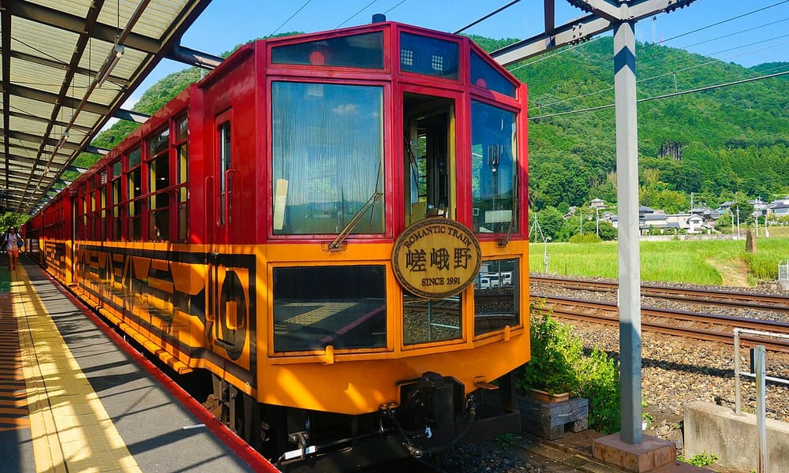
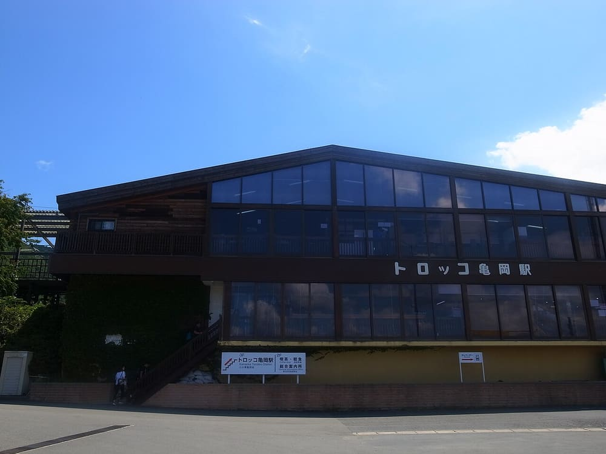
官網票價表的數字在網頁擷取時沒有顯示，所以票價是用龜岡市官網（來源）確認，Google Maps 顯示也是 ¥880。
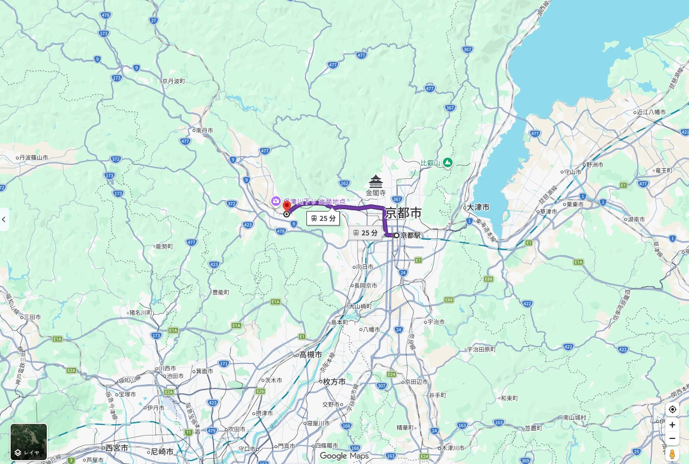
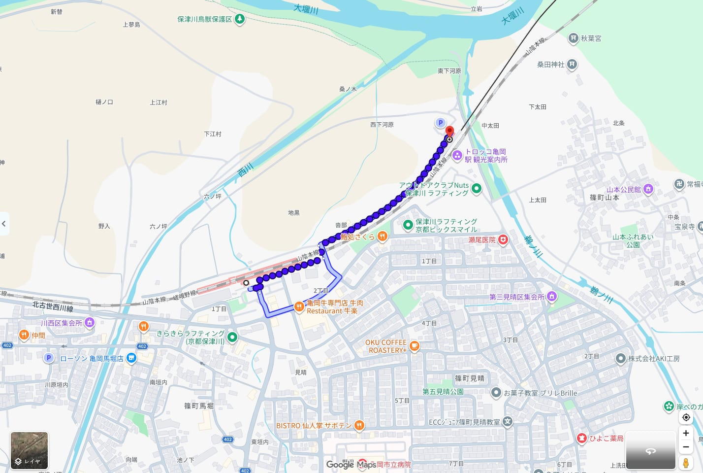
| 時間 | 動作 | 備註 |
|---|---|---|
| 08:16 | 京都站 JR 嵯峨野線「普通」發車 | 建議搭這班。之後有 08:27（亀岡方面）、08:40 普通、08:53 普通。⚠️ |
| 約 08:41 | 抵達馬堀站 | Google Maps 顯示京都→馬堀 25 分、¥320📷Google |
| 08:41～08:50 | 步行到トロッコ亀岡站 | 站前有觀光案內所。步行 7～9 分。📷Google |
| 08:50～09:20 | 換票（若用電子票，出示 QR）、拍站體、上廁所 | 預留約 30 分緩衝，因為這班車不能錯過。 |
| 09:30 | 小火車發車 | 提早 10 分鐘到月台。 |
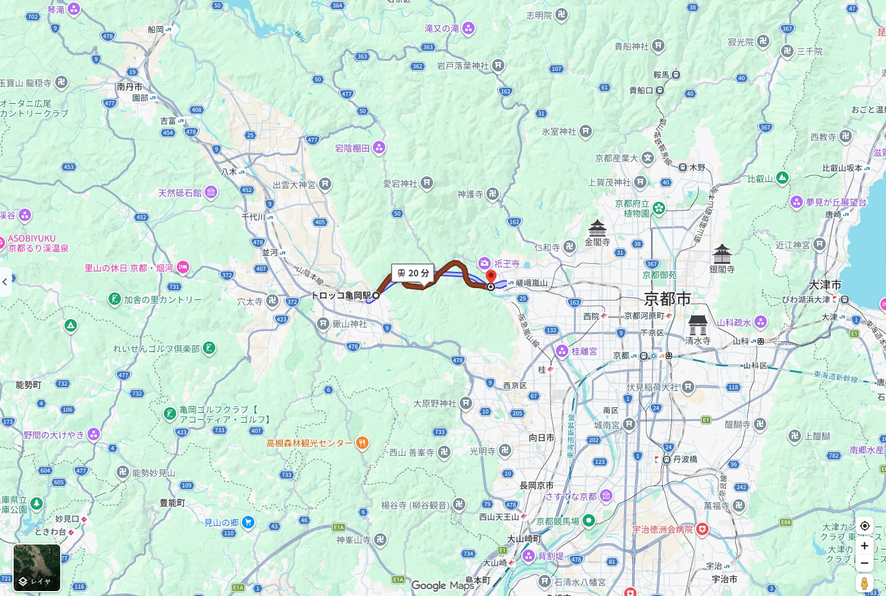
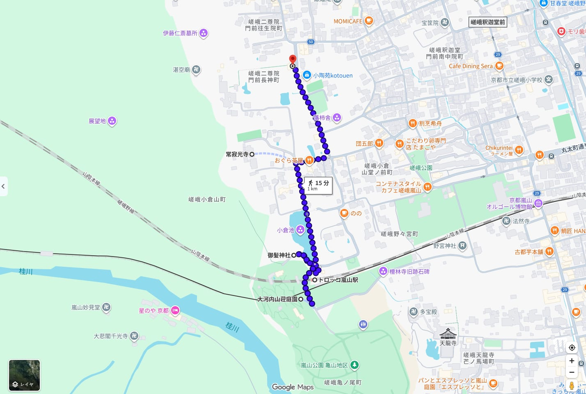
從這裡開始是北段的四個點。這張圖能看出它們都貼在小倉山山腳，走完一圈只有約 1 km。
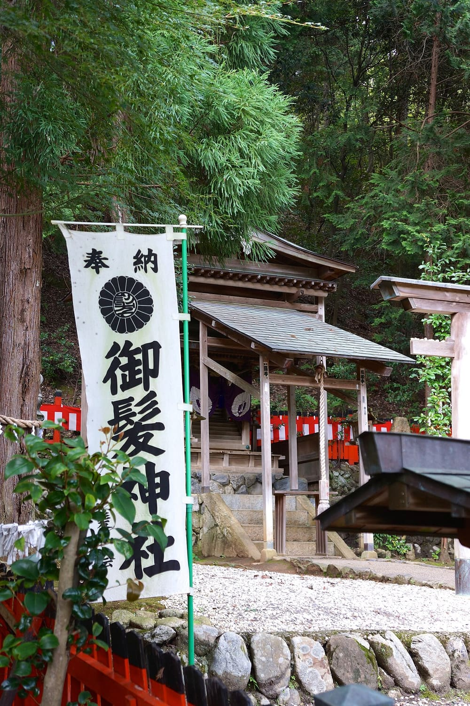
御髮神社是日本唯一祭祀「頭髮」的神社，位在小火車下車後最近的一處山腳小社。它不大，觀光價值不高，但一出站就能走到，御朱印很有特色，適合當作嵯峨野的第一站。把它放在最前面，是因為它離站近，不會造成任何繞路。
神社創建於龜山天皇陵附近的小倉山，祭神是藤原采女亮政之，被視為日本髮結業的始祖。境內設有「御髮塚」，供奉信眾奉納的頭髮。美髮、理容業者常來感謝頭髮帶來的生計。官網有寫神社提供頭髮祈願與護身符。✅
拍奉納旗與紅圍欄的對比；山腳林蔭下光線偏暗，上午容易拍出斑駁的日光。
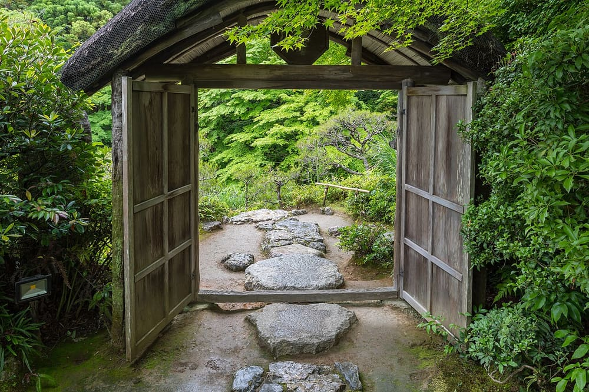
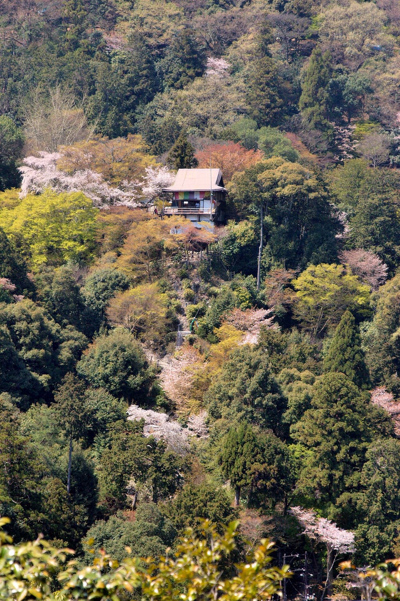
這是全天最適合「坐下來」的地方。離小火車站約 140 m⚠️，繞路成本是零，卻能在小倉山南坡上看到嵐山與京都市區的全景，最後還有一碗抹茶與和菓子。它沒有御朱印，但觀光價值高，也讓早上節奏慢下來，是我加進行程的順路景點。
這座庭園是昭和初期電影明星大河內傳次郎（1898～1962）花了約 30 年，在小倉山南坡親手打造的私人庭園。庭內有松、櫻、楓，能眺望比叡山，也與小倉山的古典詩歌有關。園內另有展示大河內傳次郎演藝生涯與日本電影史的展示空間。✅京都市觀光協會
入口木門框住飛石小徑是最經典的構圖；展望處拍嵐山與桂川。4 月上旬早上十點左右人潮還沒滿，光線也正好。園內有些區域有拍照規定，請依現場標示。
資料來源：京都市觀光協會官網
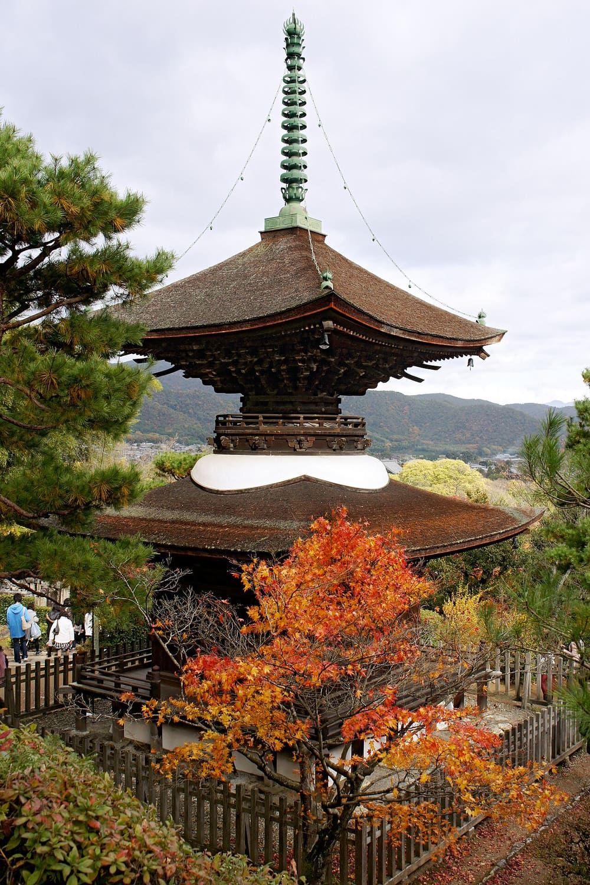
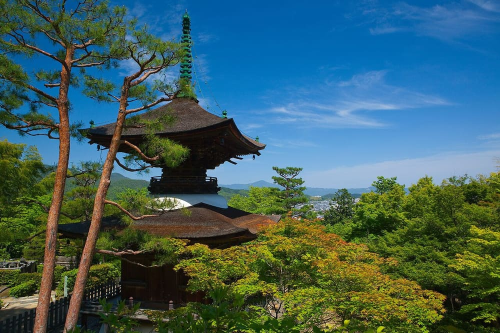
常寂光寺是北段最有「山寺」感的一處，坡度也是全天最陡的一段。爬上去，多寶塔立在山腰，回頭能看到京都市區與嵐山。它在小倉山的楓樹群裡，4 月上旬是新綠，不像秋天那樣爆滿。這裡有兩種御朱印，價值高，是我把它留在行程裡的主因。
位在小倉山山腰，是日蓮宗的寺院（二手資料⚠️）。境內有仁王門、本堂與山腰的多寶塔，整片山坡種了許多楓樹。小倉山自古是和歌名所，與大河內山莊、二尊院同屬這片山腳。
多寶塔越靠近越要仰拍；從塔旁往回拍遠景，能把京都市區與山坡一起入鏡。石階濕滑時小心。
資料來源：常寂光寺官網
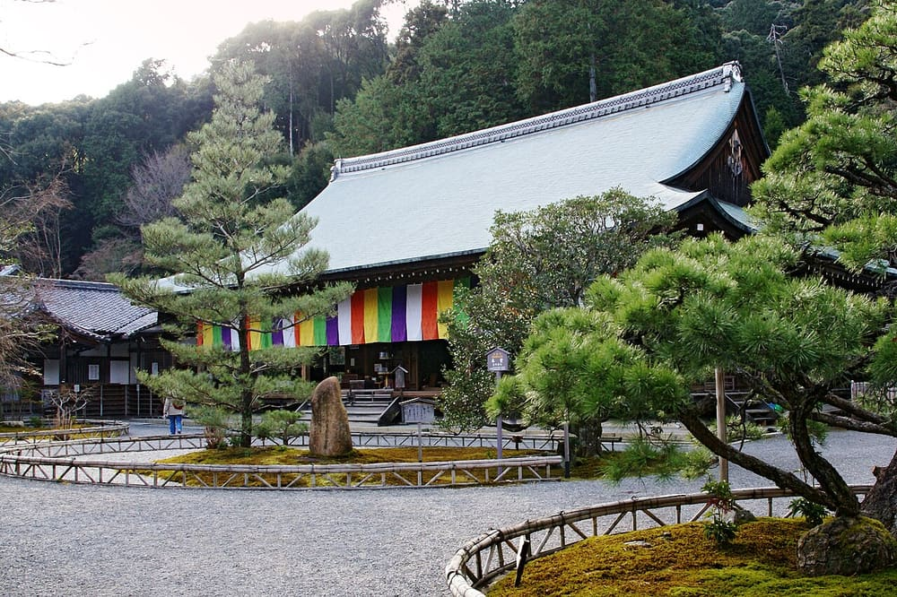
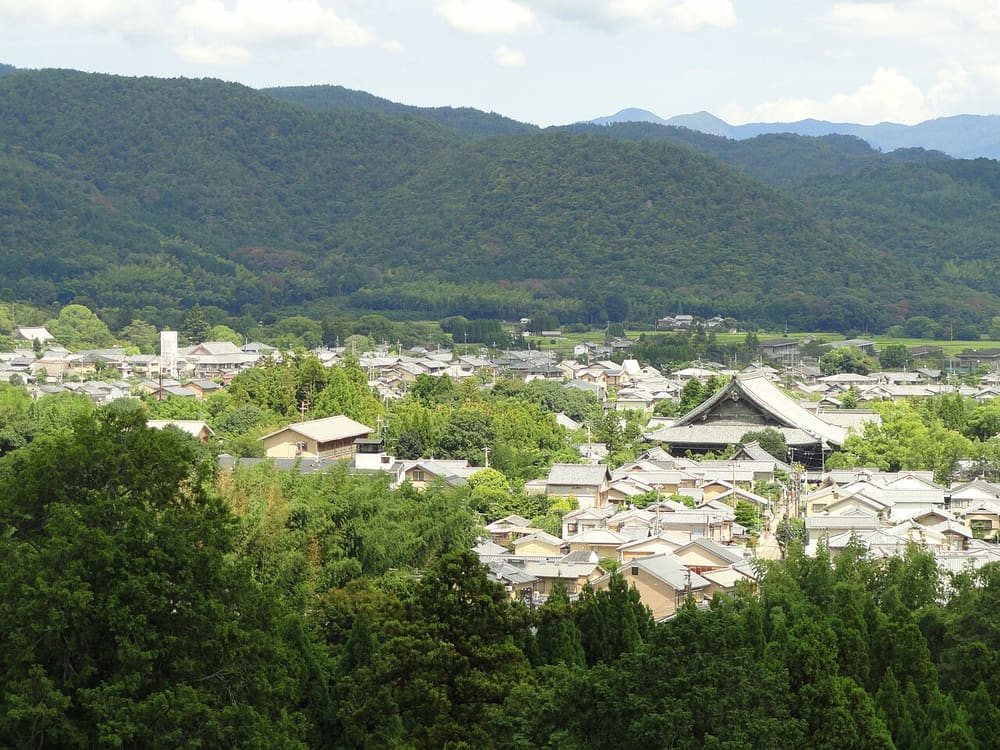
二尊院是北段的最後一站，也是這幾座寺院裡「歷史氣氛最完整」的一座：長長的參道、氣派的總門、兩尊本尊。它的御朱印是直書き、種類多，我把它從一般順路景點提升為值得認真收的一處。位置在北段最北端，走完就開始往南回程。
二尊院是天台宗寺院，位在小倉山東麓，「二尊」指釋迦如來與阿彌陀如來兩尊本尊（社群投稿記載）。📷 境內的總門建於慶長十八年（1613 年），是京都市指定文化財；穿過總門後是一條由楓樹夾道的參道，寺院也是「法然上人二十五靈場」第十七番。✅官網
站在總門後面往參道拍縱深；4 月上旬的楓是嫩綠色。正殿內部拍照請遵守現場規定。
資料來源：二尊院官網
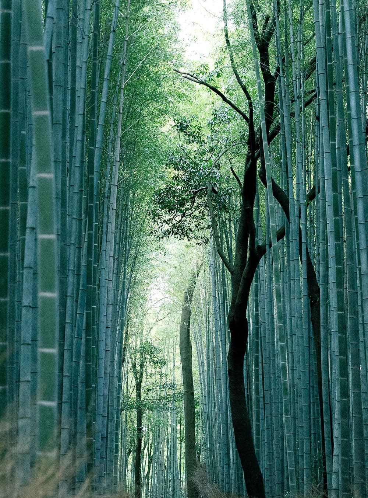
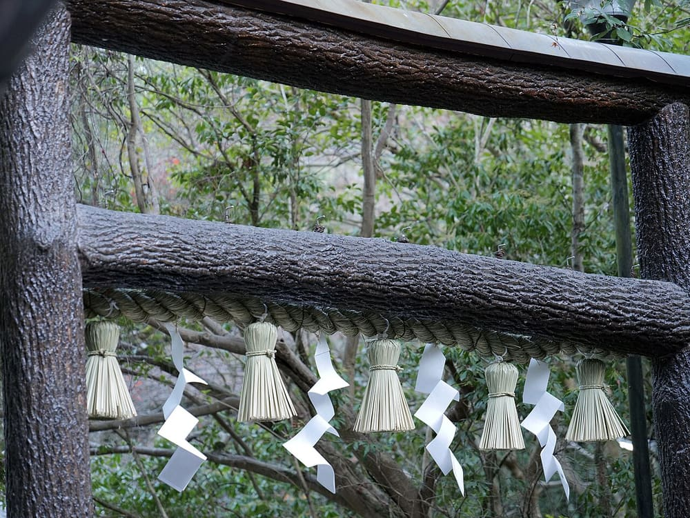
為什麼推薦：這是嵯峨野最具代表性的畫面，離開北段山腳往南時順路穿過，完全沒有繞路。4/8 前後是人潮高峰，中午前後最擠，所以只花 20 分，不是拍完全部，而是慢慢走。
簡介：兩側高聳的孟宗竹夾出一條步道，一路通往天龍寺北門。風吹過竹梢的聲音是它的特色。
現場看什麼：抬頭看竹林、路上的光影、靠近野宮神社一側的小柴垣。
停留：20 分（含拍照）。拍照：不要站在路中間；人少時往低處拍，把光線灑進來。
從小火車站走到竹林約 10 分（官網 FAQ）✅；本行程是從二尊院往南走到竹林，Google Maps 未單獨標示竹林，現場請依「竹林の小径」指標。⚠️
為什麼推薦：竹林裡的一座小社，與《源氏物語》有關，人氣高在縁結び與學業。神社很小、御朱印只有蓋印，所以是「順路收」，不會多花心力。
簡介：官網介紹以「黑木鳥居」與「小柴垣」為特色，並有一塊神石（龜石）。✅
現場看什麼：樹皮未剝的黑木鳥居、小柴垣、龜石（依現場說明參拜）、拜殿。
停留：25 分（含御朱印與排隊）。
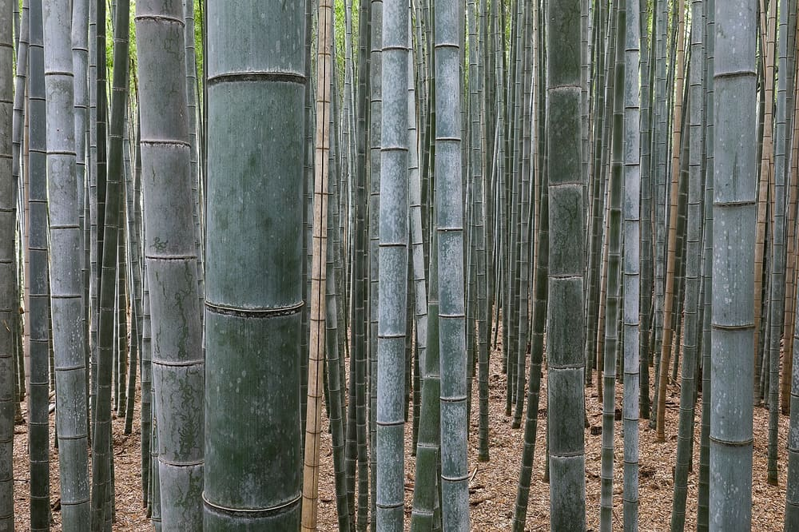
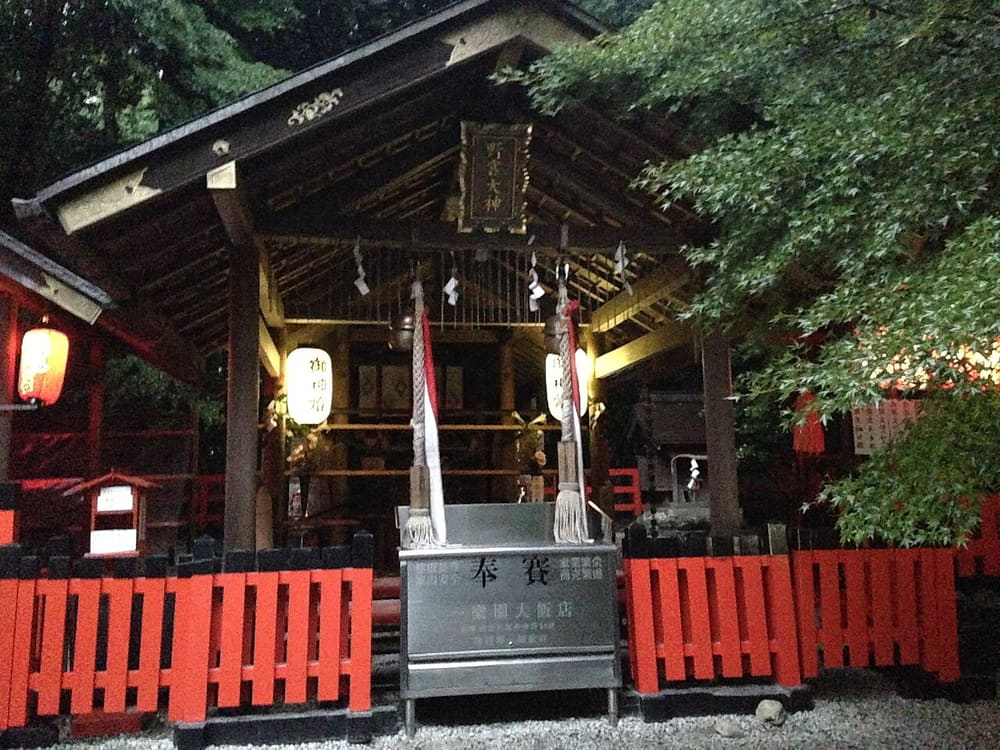
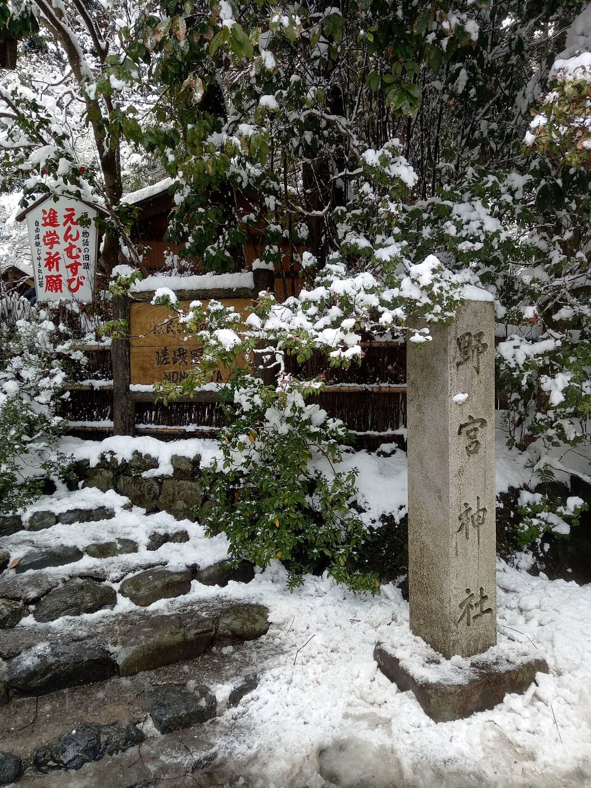
午餐排在 13:30，剛好在野宮神社之後、天龍寺之前。這一帶走路都在 5 分鐘內，不用為了一間店繞路。
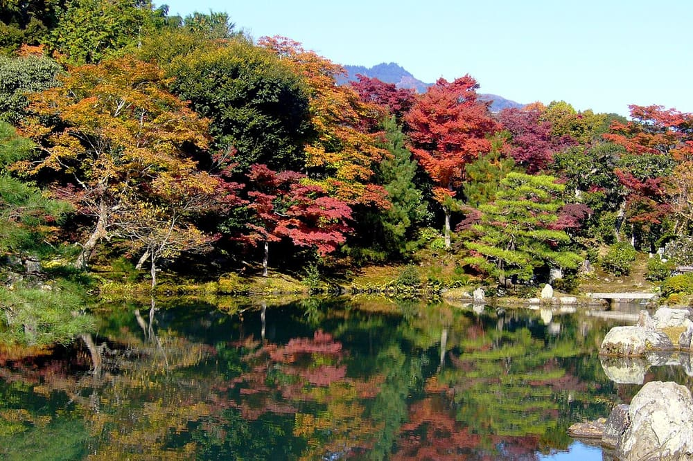
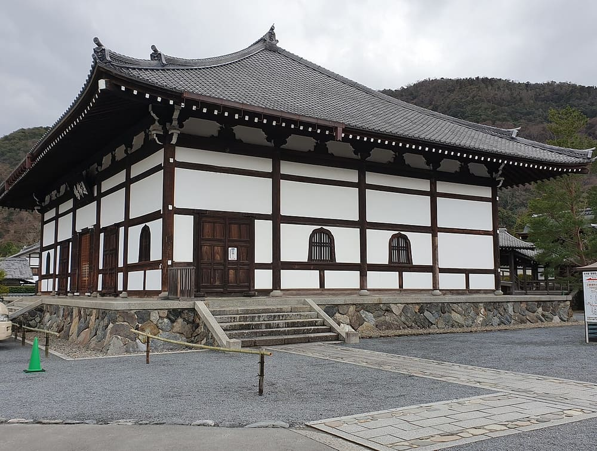
天龍寺是這一天的「主場」。它是臨濟宗天龍寺派的大本山，被列入世界遺產「古都京都的文化財」✅，庭園借嵐山當背景，是京都最有代表性的禪寺庭園之一。安排在午餐後，剛好能用一個安靜的下午收掉最重要的景點；而且它位在嵐山中心，走完之後渡月橋與 JR 站都在 15 分鐘內。
天龍寺由足利尊氏創建，開山祖師是夢窗疎石，是京都五山之首（一般認知，⚠️）。境內最有名的是夢窗疎石設計的曹源池庭園，以池、石組與遠山構成；後方的百花苑則是季節花木的區域。庭園之外還有大方丈、書院與多寶殿等建築（合稱諸堂），以及有龍圖的法堂。
天龍寺很大，不能只當成「一個景點」。以下是本行程的判斷：只看庭園，不全走完。理由是庭園（曹源池＋百花苑）就是天龍寺的精華，加購諸堂要多花 ¥300 與 20～30 分，雲龍圖 4/8 又不確定開放。
| 區域 | 內容 | 建議時間 | 是否要付費 | 本行程 |
|---|---|---|---|---|
| 曹源池庭園 | 池、石組、嵐山借景 | 30 分 | 庭園料 ¥500 | 必看 |
| 百花苑 | 後方山坡的花木步道 | 20 分 | 含在庭園料內 | 必看 |
| 大方丈前廊 | 坐著看庭園 | 10 分 | 含在庭園料或諸堂 | 視人潮 |
| 諸堂（大方丈、書院、多寶殿） | 室內展示與廊下 | 20～30 分 | +¥300 | 不排（雨天備案） |
| 法堂雲龍圖 | 天井龍圖 | 15 分 | ¥500，週末假日 | 不排 |
| 北門 | 出口，接竹林小徑 | — | — | 可作出口 |
入口（正門或北門）與各區實際動線以現場指標為主；本手冊沒有自繪境內圖，官方導覽請看官網連結。
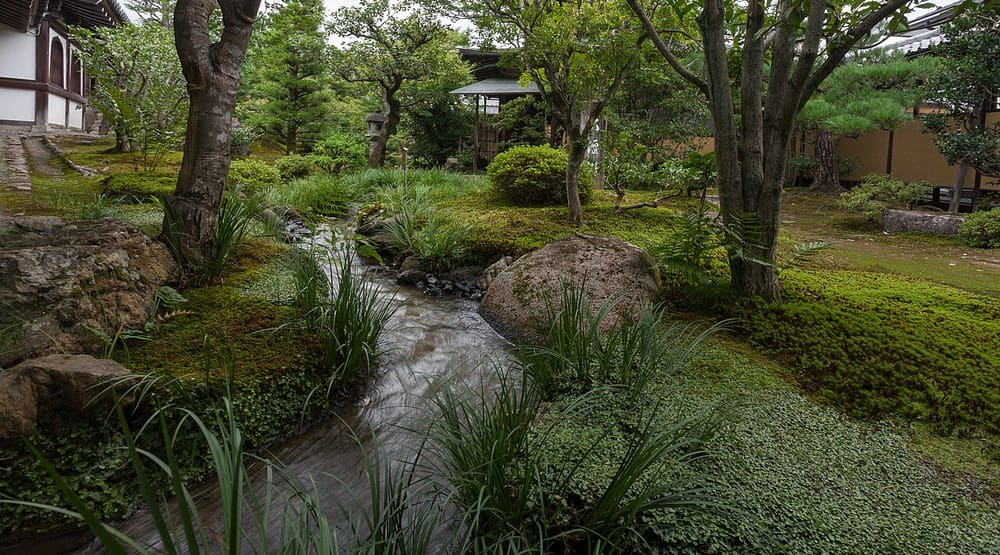
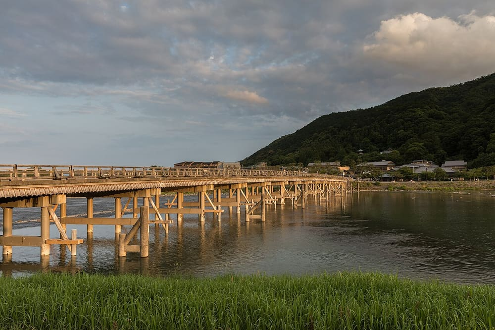
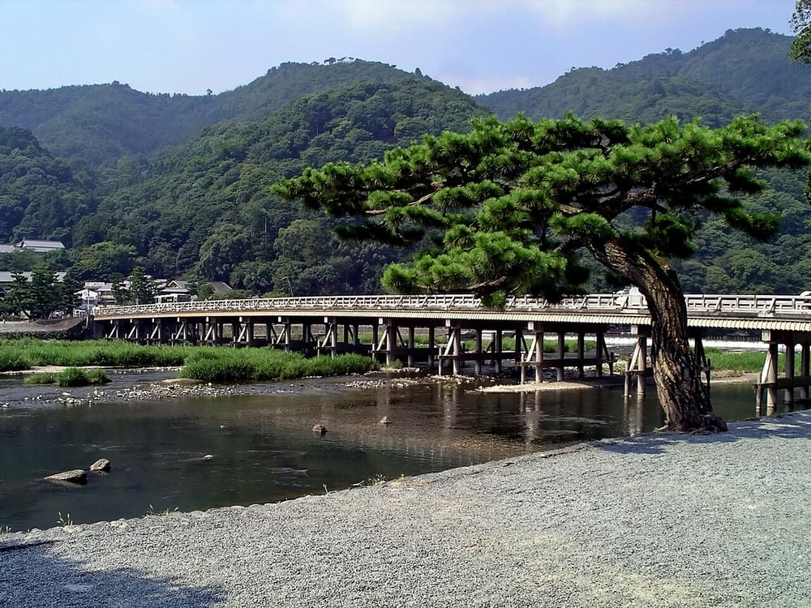
為什麼推薦：渡月橋是嵐山的象徵，橫跨桂川，放在行程尾端，是走完寺社後慢慢收尾的地方。離 JR 站和商店街都近，可以隨時調整時間。
簡介：橋橫跨桂川（上游稱大堰川），背後是嵐山。相傳「渡月」之名與龜山上皇有關（一般說法，⚠️）。
現場看什麼：橋上望嵐山、河畔的松樹、河面上的小船。
停留：20 分。拍照：從河邊往橋與山拍全景最好；橋上人多，站在河岸的沙洲較容易拍。
為什麼保留：這是行程裡最先可以刪的一段（C 級）。它的角色是「收尾」與「買伴手禮」，不是重點景點。
怎麼逛：從渡月橋北詰沿街往北走，一路是小吃與伴手禮店，最後接 JR 嵯峨嵐山站方向。營業時間各店不同，我沒有逐一查證。⚠️
停留：40 分。時間吃緊直接省略。
路線：渡月橋 → 嵯峨嵐山站，Google Maps 顯示與天龍寺前的路連在一起，最後約 15 分到車站。
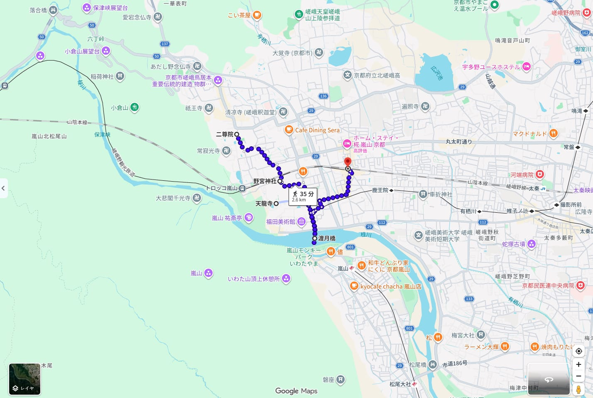
御朱印是重要興趣，但以「順路收集」為原則：今天 5 處寺社都在動線上，沒有為了多收一張而繞路。「值得收集」與「值得參觀」分開判斷，S 最高、C 最低。
| 寺社 | 參觀 | 收集 | 御朱印 | 授與位置 | 授與時間 | 取得方式 | 備註 | 推薦 |
|---|---|---|---|---|---|---|---|---|
| 御髮神社 | B | A | 「髮」1 種，¥300⚠️ | 神社的社務所⚠️ | 09:00／09:30／10:00 起，說法不同⚠️ | 書置き為主，偶有直書き📷2026 | 可請神職貼進帳📷 | ★★★★★ |
| 常寂光寺 | A | A | 御朱印＋御首題，各 ¥300⚠️ | 拜觀受付📷 | 09:00～17:00（16:30）⚠️ | 書置き📷2026 | 有期間限定紀錄📷 | ★★★★☆ |
| 二尊院 | A | A | 本尊二尊、九頭龍辯財天、二十五靈場第十七番 | 現場詢問 | 未明載⚠️ | 直書き📷2026 | 有季節限定紀錄📷 | ★★★★★ |
| 野宮神社 | A | B | 1 種蓋印，¥300⚠️ | 境內右手社務所📷 | 09:00～17:00⚠️ | 蓋印為主，偶爾直書き📷2026 | 無專用御朱印帳⚠️ | ★★★☆☆ |
| 天龍寺 | S | A | 1 種為主，約 ¥300⚠️ | 境內手前左手社務所📷 | 約 08:30～17:30⚠️ | 蓋印直書き、書置き皆有📷2026 | 神佛靈場巡拜之道 京都 8 番📷 | ★★★★☆ |
基本 5 張（每處 1 張）。若加收常寂光寺御首題與二尊院第二種御朱印，約 7 張，御朱印費用約 ¥1,500～2,400。正常節奏下不會影響行程。
近期投稿看到常寂光寺（洛陽十二支妙見巡「酉」、御本堂公開紀念切繪）、二尊院（2025/11/26 季節限定）有限定版。4/8 前後是否有櫻花季限定版，我沒有找到資料，請現場看告示。📷
書置き（紙）通常要自己貼到御朱印帳，記得帶雙面膠或口紅膠。御髮神社有時神職會幫忙貼。直書き請先把御朱印帳翻到要寫的頁面，遞出時打開放好。
御朱印資料來自：各寺社官網（未載明者標 ⚠️）與 Omairi 真實訪客投稿（我用瀏覽器實際讀取，投稿期間 2025/03～2026/09）。價格與時間可能變動，最終以現場公告為準。
時間均為預估。10:00～13:30 的步行段落是我依 Google Maps 總步行 50 分（北段 15 分＋南段 35 分）分配的估算。⚠️
| 類別 | 項目 | 金額（每人） | 來源 |
|---|---|---|---|
| 交通 | JR 京都 → 馬堀 | ¥320 | |
| 嵯峨野小火車（龜岡 → 嵐山） | ¥880 | ✅ | |
| JR 嵯峨嵐山 → 京都 | ¥240 | ||
| 交通小計 | ¥1,440 | ||
| 門票 | 大河內山莊（含抹茶點心） | ¥1,000 | ✅ |
| 常寂光寺 | ¥600 | ✅ | |
| 二尊院 | ¥500 | ✅ | |
| 天龍寺庭園（諸堂 +¥300 不排） | ¥500 | ✅ | |
| 門票小計 | ¥2,600 | ||
| 御朱印 | 5 張（基本）～ 7 張（加收兩種） | 約 ¥1,500～2,400 | ⚠️ |
| 午餐 | 湯豆腐等一餐 | 約 ¥2,000～3,500 | ⚠️ |
| 小吃與飲料 | 街區小吃、自動販賣機 | 約 ¥1,000 | ⚠️ |
| 預估總費用／人 | 約 ¥8,500～11,000 | ||
下雨時不重新規劃，只把「戶外、爬坡、拍照為主」的部分縮短，保留有屋簷或雨中更好看的地方。小火車雨天是否照常行駛，請看官網當日公告。⚠️
| 景點 | 雨天判斷 | 調整方式 |
|---|---|---|
| 小火車 | 視公告 | 當日早上看官網「運行情況」；若停駛見「彈性與刪減」頁。 |
| 大河內山莊 | 仍然值得 | 庭園苔與新綠雨中更漂亮，抹茶休息可延長。 |
| 御髮神社 | 可去 | 停留縮短，御朱印取完即走。 |
| 常寂光寺 | 縮短 | 山腰石階濕滑，體力或雨勢大就只到本堂前，不上多寶塔。 |
| 二尊院 | 仍然值得 | 本堂與參道有屋簷可避雨，總門雨景好看。 |
| 竹林小徑 | 雨中反而好看 | 竹葉發亮，人也少；注意路面濕滑。 |
| 野宮神社 | 可去 | 縮短停留，御朱印領完即走。 |
| 天龍寺 | 仍然值得 | 建議加購諸堂（+¥300），能在廊下看庭園而不淋雨。 |
| 渡月橋與街區 | 可省 | 雨天視野差，渡月橋可過橋即回；街區小吃改成室內店。 |
這個分級是為了「行程調整」，不是對景點做主觀評分。S 盡量保留、A 推薦保留、B 有時間再去、C 可以刪除。刪除順序是 C → B → A。
| 級別 | 景點 | 說明 |
|---|---|---|
| S | 嵯峨野小火車、竹林小徑、天龍寺 | 整天主軸，盡量保留。 |
| A | 常寂光寺、大河內山莊、渡月橋、野宮神社 | 推薦保留；野宮神社順路，不占時間。 |
| B | 御髮神社、二尊院 | 有時間再去。但兩者的御朱印價值高，刪除前先想是否只縮短停留。 |
| C | 嵐山街區、午餐拉長的部分 | 最先刪。 |
| 情境 | 怎麼調整 |
|---|---|
| 晚出發 30 分 改搭 08:40 普通 | 約 09:05 到馬堀，09:15 到小火車站，仍趕得上 09:30。不用刪景點，但剩下的緩衝只有 15 分。 |
| 晚出發 1 小時 趕不上 09:30，改 10:30 小火車 | 10:53 抵達嵐山。刪二尊院與街區，大河內山莊縮為 30 分。新時間：御髮神社 10:58～11:20 → 大河內山莊 11:25～11:55 → 常寂光寺 12:05～12:45 → 竹林與野宮 13:00～13:40 → 午餐 13:40～14:30 → 天龍寺 14:30～15:45 → 渡月橋 → 17:00 回。 |
| 排隊太久 竹林、午餐、天龍寺御朱印 | 午餐改街區小吃（縮到 30 分）；天龍寺只看庭園，60 分版；御朱印排太久先拍照再回來領。 |
| 交通延誤 JR 延誤到趕不上 09:30 | 直接改 10:30 那班（同「晚出發 1 小時」）。若整條小火車停駛（如強風），先在馬堀站確認，改搭 JR 回到嵯峨嵐山站，把行程反過來走：天龍寺 → 竹林 → 野宮 → 北段四處，回程仍是 JR 嵯峨嵐山站。⚠️ |
| 某景點臨時關閉 | 直接刪除該景點，不需補位。若是天龍寺庭園關閉，延長午餐與渡月橋，並提前回京都。 |
刪除決策原則：先看時間，再看動線，最後才看御朱印。因為「為了多收一張而繞路」在這個行程裡不值得。
| 地點 | 開放時間 | 最晚入場 | 御朱印 | 備註 |
|---|---|---|---|---|
| 嵯峨野小火車 | 09:30 起，每小時 :30 發✅ | 末班 16:30 發 | — | 2027 年時刻待確認⚠️ |
| 御髮神社 | 境內自由⚠️ | — | 09:00／09:30／10:00 起⚠️ | 社務所可能到 15:00 或 16:00 ⚠️ |
| 大河內山莊 | 09:00～17:00✅ | 16:30 | — | 全年無休✅ |
| 常寂光寺 | 09:00～17:00✅ | 16:30 | 09:00～17:00⚠️ | 受付 16:30 截止 |
| 二尊院 | 09:00～16:30✅ | — | 未載明⚠️ | 年中無休✅ |
| 野宮神社 | 境內自由⚠️ | — | 09:00～17:00⚠️ | — |
| 天龍寺庭園 | 08:30～17:00✅ | 16:50 | 約 08:30～17:30⚠️ | 諸堂 16:30、雲龍圖 16:20 |
| 湯豆腐 嵯峨野 | 11:00 起⚠️ | LO 16:30 或 17:30 | — | 賣完即止 |
勾選狀態只保存在這台裝置的瀏覽器裡，換裝置或清除資料就會消失。
| 可信度 | 來源 | 取用內容 |
|---|---|---|
| ✅ 官方 | 嵯峨野觀光鐵道 官網（運行資訊、時刻表 PDF、運行日曆 PDF、FAQ、票務） | 2026 年時刻表（2026/3/14 改正）、2026 年運行日曆、1 個月前 00:00 訂位、退票規則、當日票、新型車輛預告 |
| ✅ 官方 | 龜岡市官網：嵯峨野トロッコ列車 | 票價 ¥880／¥440、全席指定、運行期間、水曜定休 |
| ✅ 官方 | 天龍寺 官網（參拜・交通案內） | 開放時間、拜觀料、諸堂、雲龍圖；篩月營業時間 |
| ✅ 官方 | 常寂光寺 官網 | 拜觀時間 09:00～17:00、拜觀料 ¥600 |
| ✅ 官方 | 二尊院 官網 | 拜觀時間、拜觀料 ¥500、總門 |
| ✅ 官方 | 京都市觀光協會：大河內山莊庭園 | 開園時間、入園料、簡介 |
| ✅ 官方 | 御髮神社 官網 | 神社概要、髮塚（開放時間未載明） |
| ✅ 官方 | 野宮神社 官網 | 黑木鳥居、小柴垣、神石（時間與御朱印未載明） |
| 📷 Omairi | 天龍寺、野宮神社、御髮神社、常寂光寺、二尊院 的 Omairi 御朱印頁 | 2025/03～2026/09 的真實投稿（我用瀏覽器實際讀取） |
| ⚠️ 二手 | Google Maps（步行與轉乘） | 步行時間與距離、爬升、JR 車程與票價、地圖截圖（2026-09-30） |
| ⚠️ 二手 | Yahoo!乘換案內：京都站 嵯峨野線時刻表 | 早晨班次（08:16、08:27、08:40、08:53） |
| ⚠️ 二手 | Tabelog／Hotpepper 等（湯豆腐 嵯峨野） | 午餐店營業時間與公休（兩種說法） |
| ⚠️ 二手 | Hotokami 等御朱印網站 | 御髮神社、野宮神社、天龍寺的授與時間與價格（二手） |
資訊互相矛盾時（例如二尊院拜觀料 ¥500／¥600、御髮神社授與時間、湯豆腐店營業時間），手冊內都直接標出差異，沒有自行猜測。
所有照片為 Wikimedia Commons 的授權照片（CC BY／CC BY-SA／CC0／公有領域），已用瀏覽器逐張確認畫面內容。地圖為 Google Maps 截圖。手冊製作日 2026-09-30，價格與時間可能變動，以現場與官網公告為準。
| 檔案 | 作者 | 授權 | 頁面 |
|---|---|---|---|
| bamboo1.jpg 竹林／御髮神社 | Mitchwandrew | CC BY 4.0 | Arashiyama Bamboo Grove.jpg |
| bamboo2.jpg 竹林／御髮神社 | Basile Morin | CC BY-SA 4.0 | Bamboo Forest, Arashiyama, Kyoto, Japan.jpg |
| jojak1.jpg 常寂光寺 | 663highland | CC BY 2.5 | Jojakkoji01s3200.jpg |
| jojak3.jpg 常寂光寺 | Casey Yee | CC BY-SA 2.0 | Jōjakkoji Tahōtō May 17, 2009.jpg |
| mikami1.jpg 御髮神社 | Kentaro Ohno | CC BY 2.0 | Mikami Shrine, Kyoto - Aug 31, 2014 (1).jpg |
| nison2.jpg 二尊院 | 663highland | CC BY 2.5 | Nisonin03s3200.jpg |
| nison3.jpg 二尊院 | Daderot | CC0 | Nisonin - Kyoto - DSC06236.JPG |
| nonomiya1.jpg 野宮神社 | Foxy1219 | CC BY-SA 4.0 | Nonomiya Shrine 2017.jpg |
| nonomiya2.jpg 野宮神社 | Hyppolyte de Saint-Rambert | CC BY 4.0 | Nonomiya-jinja (Ukyō-ku Kyoto) Torii hdsr S5 05.jpg |
| nonomiya3.jpg 野宮神社 | そらみみ | CC BY-SA 4.0 | Haiden of Nonomiya Shrine at dusk.JPG |
| okochi1.jpg 大河內山莊 | Basile Morin | CC BY-SA 4.0 | Wooden gate in Okochi Sanso Garden, Kyoto, Japan.jpg |
| okochi3.jpg 大河內山莊 | KimonBerlin | CC BY-SA 2.0 | Okochi Sanso Villa (3670797334).jpg |
| tenryu1.jpg 天龍寺 | Marco Almbauer | CC BY-SA 4.0 | Tenryū-ji Garten.jpg |
| tenryu2.jpg 天龍寺 | TarnishedPath | CC BY-SA 4.0 | Tenryu-ji Temple in Kyoto.jpg |
| tenryu4.jpg 天龍寺 | ttshr1970 | CC BY 3.0 | Tenryu-ji, Sogenchi Teien (Garden) -1 (November 2008) - panoramio.jpg |
| toget1.jpg 渡月橋 | Blue Lotus from Arashiyama, Kyoto | CC BY 2.0 | Togetsukyo in Kyoto Arashiyama.jpg |
| toget2.jpg 渡月橋 | Basile Morin | CC BY-SA 4.0 | Togetsu-kyō bridge at golden hour, Kyoto, Japan.jpg |
| train1.jpg 嵯峨野小火車 | Streetdeck | CC BY-SA 4.0 | Sagano Romantic Train.jpg |
| train3.jpg 嵯峨野小火車 | Toshinori baba | CC BY-SA 4.0 | Sagano scenic railway hotsukyo.jpg |
| train4.jpg 嵯峨野小火車 | Nesnad | CC BY 4.0 | Torokko Kameoka Station - front A - 2017 8 19.jpg |